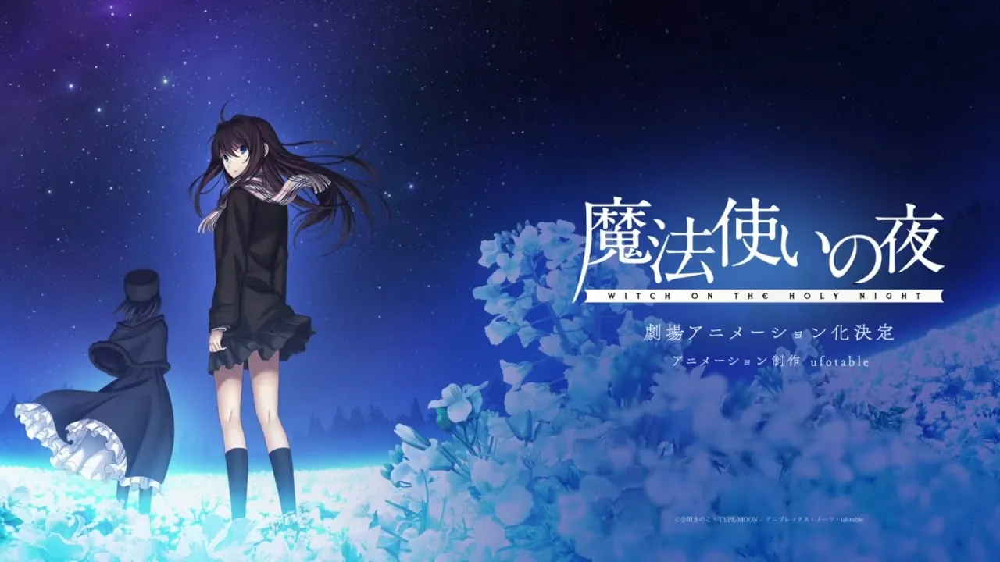

A adaptação em filme da Visual Novel Mahoyo ganha data de estreia nos cinemas brasileiros
A data foi confirmada pelo estúdio Ufotable.

A data foi confirmada pelo estúdio Ufotable.

O novo título deve ser lançado ainda neste ano.
O reboot da Visual Novel, com adaptação em anime, recebe elógios, mas também críticas pelo preço.